Homing#
An incremental encoder only counts relative motion: at power-on the position is whatever it was, or zero. Homing finds a physical reference - a switch, the encoder index, a hard stop - and declares it to be a known position. Until then, a stored pose means nothing.
Running a homing method#
bool Home(const controls::Homing & request,
std::chrono::milliseconds timeout = std::chrono::milliseconds{30000});
motor.Enable();
const bool homed = motor.Home(
epos4::controls::Homing{}.WithMethod(epos4::signals::HomingMethod::kNegativeLimitSwitch),
std::chrono::seconds{30});
Home() switches to Homing Mode, starts the run and blocks until it ends. It returns
true when the drive reports homing attained and target reached together, and false
on a homing error, on timeout, or when it refuses to start:
- The method is not supported. The drive's list (
0x60E3,GetSupportedHomingMethods()) does not contain it. - Its switch is not mapped. A method that needs a limit or home switch is refused if no
digital input carries that function (
0x3142) - instead of driving the axis until it hits something mechanical.
Without WithMethod(), the method configured in HomingConfigs::method is used.
After a successful run, IsPositionReferenced() is true (Statusword bit 15). It turns false
again on a position counter overflow, a sensor error, a sensor reconfiguration, or a fault
whose reset clears the position - check it before any move to an absolute position.
The methods#
| Method | Value | Needs | How it ends |
|---|---|---|---|
kNegativeLimitSwitchAndIndex |
1 | negative limit switch, index | first index after leaving the switch |
kPositiveLimitSwitchAndIndex |
2 | positive limit switch, index | first index after leaving the switch |
kHomeSwitchPositiveSpeedAndIndex |
7 | home switch, index | index next to the home switch edge |
kHomeSwitchNegativeSpeedAndIndex |
11 | home switch, index | index next to the home switch edge |
kNegativeLimitSwitch |
17 | negative limit switch | the switch edge |
kPositiveLimitSwitch |
18 | positive limit switch | the switch edge |
kHomeSwitchPositiveSpeed |
23 | home switch | the switch edge |
kHomeSwitchNegativeSpeed |
27 | home switch | the switch edge |
kIndexNegativeSpeed |
33 | index | the next index pulse |
kIndexPositiveSpeed |
34 | index | the next index pulse |
kActualPosition |
37 | nothing | no motion: the current position becomes home |
kCurrentThresholdPositiveSpeedAndIndex |
-1 | a hard stop, index | index after the current threshold |
kCurrentThresholdNegativeSpeedAndIndex |
-2 | a hard stop, index | index after the current threshold |
kCurrentThresholdPositiveSpeed |
-3 | a hard stop | the current threshold |
kCurrentThresholdNegativeSpeed |
-4 | a hard stop | the current threshold |
What each method does#
The drawings show the axis travel (top bar), the switches or index pulses below it, and the
path of the run: numbered segments, the home offset (homeOffsetMoveDistance) and the
final home position (homePosition). Drawings © maxon - EPOS4 Firmware Specification,
section 3.5.3.
Method 1 - kNegativeLimitSwitchAndIndex
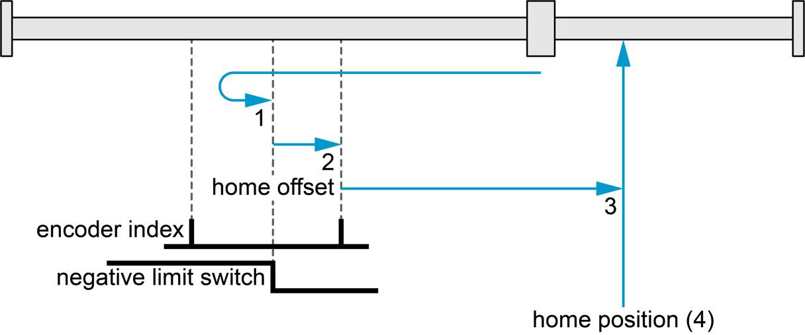
Method 2 - kPositiveLimitSwitchAndIndex
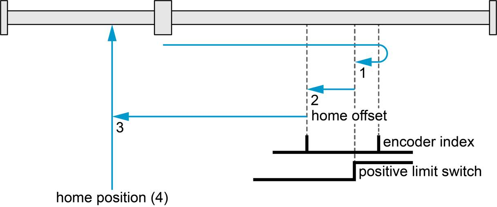
Method 7 - kHomeSwitchPositiveSpeedAndIndex
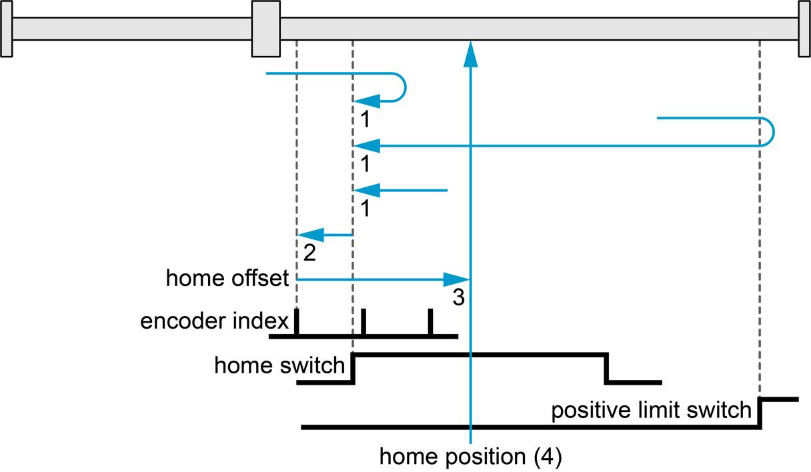
Method 11 - kHomeSwitchNegativeSpeedAndIndex
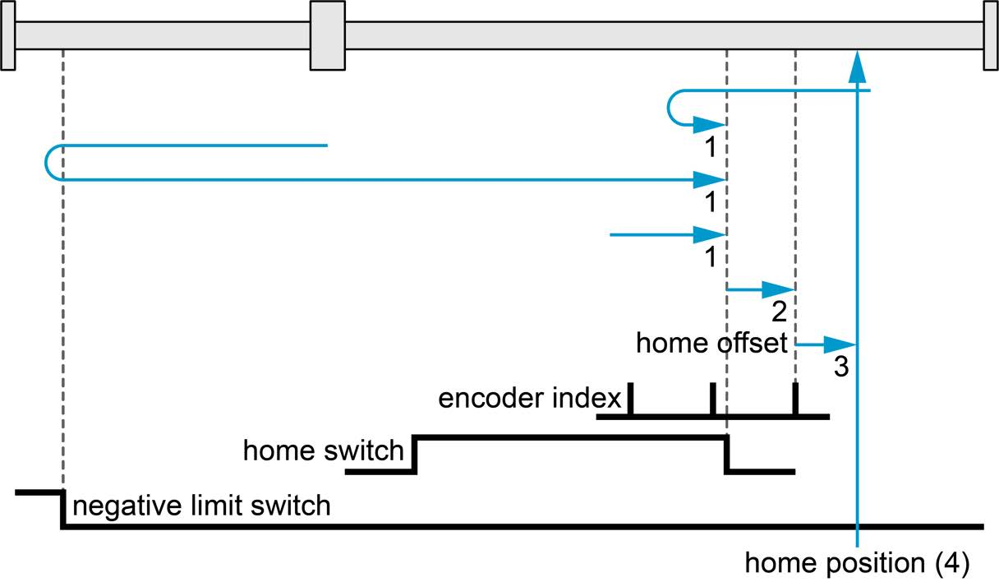
Method 17 - kNegativeLimitSwitch
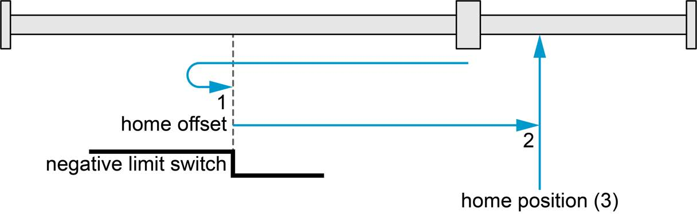
Method 18 - kPositiveLimitSwitch
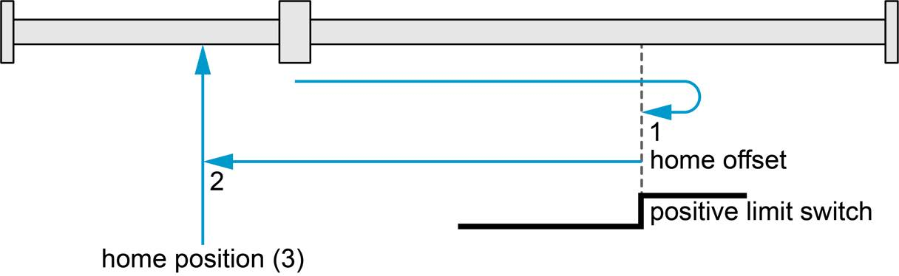
Method 23 - kHomeSwitchPositiveSpeed
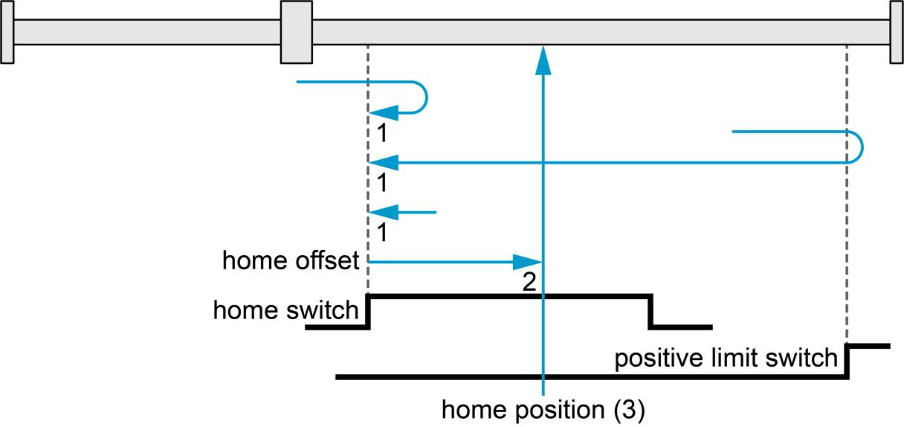
Method 27 - kHomeSwitchNegativeSpeed
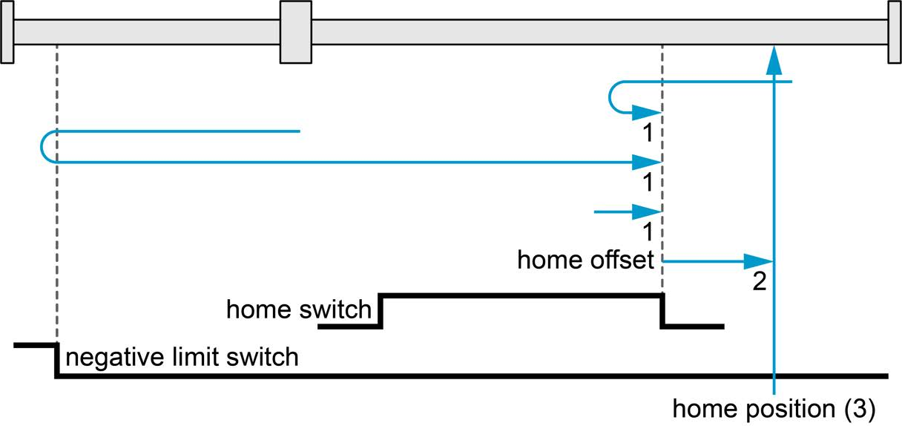
Method 33 - kIndexNegativeSpeed
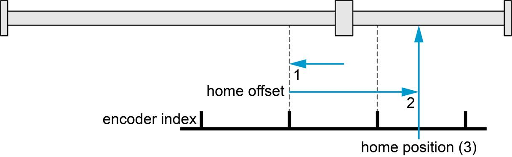
Method 34 - kIndexPositiveSpeed
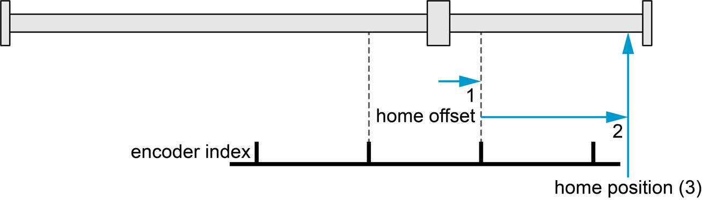
Method 37 - kActualPosition (drive disabled)
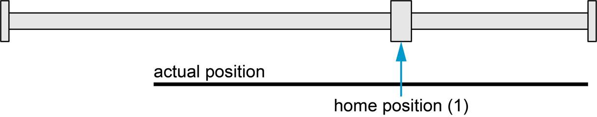
Method 37 - kActualPosition (drive enabled: moves the offset distance)
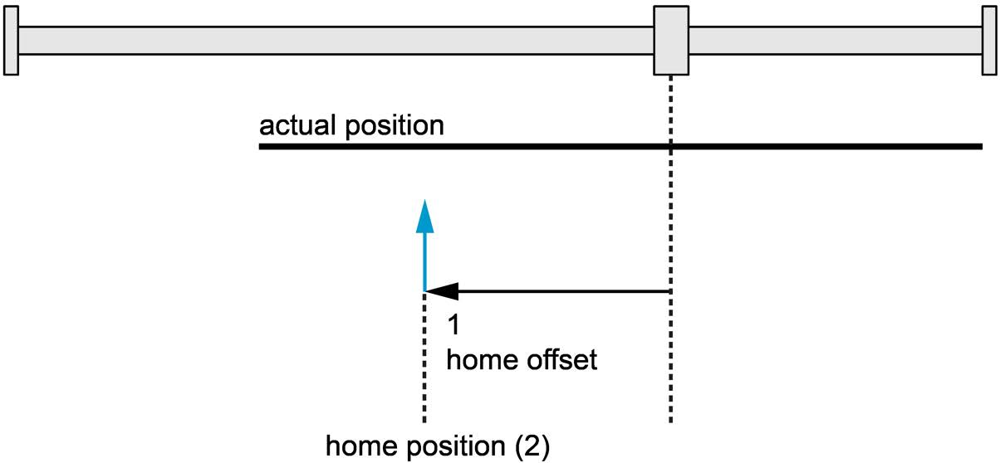
Method -1 - kCurrentThresholdPositiveSpeedAndIndex
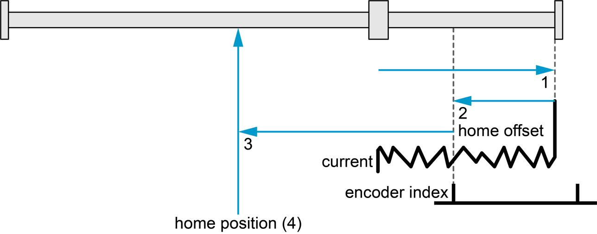
Method -2 - kCurrentThresholdNegativeSpeedAndIndex
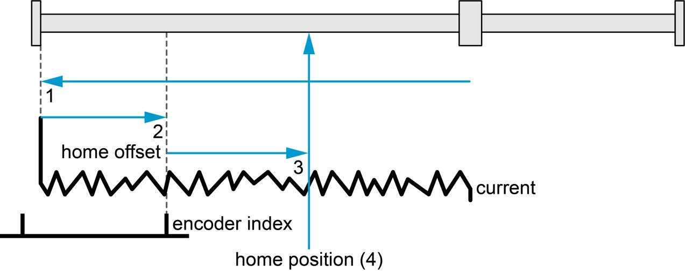
Method -3 - kCurrentThresholdPositiveSpeed
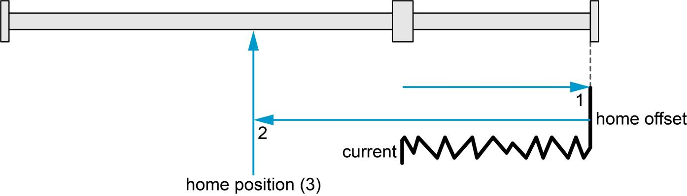
Method -4 - kCurrentThresholdNegativeSpeed
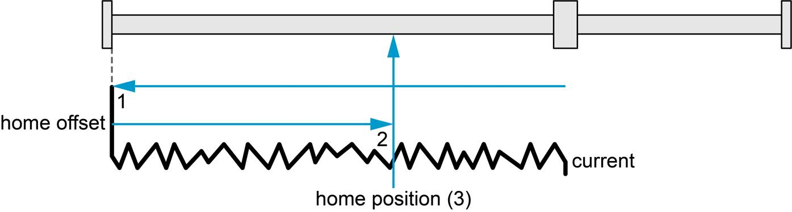
Negative values are maxon-specific. Helpers:
signals::RequiredInput(method)- the input function a method needs, ornullopt.signals::RequiresEncoderIndex(method)- true when it ends on the index, which needs a 3-channel encoder configuredIndexType::kWithIndex.
Current threshold methods drive into a mechanical end stop and detect it by the motor
current: they need HomingConfigs::currentThreshold and an end stop that tolerates being
pushed against.
Configuration#
using epos4::signals::DigitalInputFunction;
epos4::configs::DigitalInputConfigs inputs; // which pin carries which switch
inputs.input1 = DigitalInputFunction::kNegativeLimitSwitch;
inputs.input2 = DigitalInputFunction::kPositiveLimitSwitch;
inputs.input3 = DigitalInputFunction::kHomeSwitch;
epos4::configs::HomingConfigs homing;
homing.method = epos4::signals::HomingMethod::kNegativeLimitSwitch;
homing.speedForSwitchSearch = 500; // rpm, fast approach
homing.speedForZeroSearch = 100; // rpm, slow final approach
homing.acceleration = 2000; // rpm/s
homing.homeOffsetMoveDistance = 1000; // qc to move away from the switch afterwards
homing.homePosition = 0; // the position assigned to the home point
homing.currentThreshold = 1500; // mA, current threshold methods only
motor.GetConfigurator().Apply(inputs);
motor.GetConfigurator().Apply(homing);
| Field | Object | |
|---|---|---|
method |
0x6098 |
default method for Home() without WithMethod() |
speedForSwitchSearch |
0x6099:01 |
rpm, searching for the switch |
speedForZeroSearch |
0x6099:02 |
rpm, searching for the edge / index |
acceleration |
0x609A |
rpm/s |
homePosition |
0x30B0 |
position assigned at the home point |
homeOffsetMoveDistance |
0x30B1 |
quadcounts to travel after the home point |
currentThreshold |
0x30B2 |
mA, for the current threshold methods |
Limit switches that must not fault. A plain limit switch (kNegativeLimitSwitch) raises
a limit error when hit outside homing - the safe default for a real end stop. If a switch is
used for homing but the axis may legitimately touch it otherwise, map it as
kNegativeLimitSwitchNoError / kPositiveLimitSwitchNoError; homing accepts both forms.
Check the polarity first. A limit switch that reads active before a homing run started usually means an inverted polarity, not an axis at the end stop:
if (motor.IsNegativeLimitActive()) { /* DigitalInputConfigs::polarity */ }
Setting the position without moving#
std::error_code SetPosition(PositionSetpoint position,
std::chrono::milliseconds timeout = 3000ms);
motor.SetPosition(0); // "here is zero"
motor.SetPosition(90_deg); // "here is 90 degrees at the output" (needs SetMechanism)
The setPosition() of other APIs. It runs homing method 37 (actual position) with the home
offset move distance set to zero, so the axis does not move, and then restores the homing
method, 0x30B0, 0x30B1 and the operating mode: it changes the reference, not the
configuration. The drive must be in Operation enabled (operation_not_permitted otherwise).
Use it when the reference comes from somewhere else - a mechanical jig, an absolute sensor read by your program - or for axes with no reference at all (wheels).
Status bits during homing#
| Accessor | Statusword bit under HMM |
|---|---|
IsHomingAttained() |
12 - homing attained |
HasHomingError() |
13 - homing error |
IsTargetReached() |
10 - target reached / halted |
IsPositionReferenced() |
15 - referenced to home (any mode) |
The complete program is the homing example.